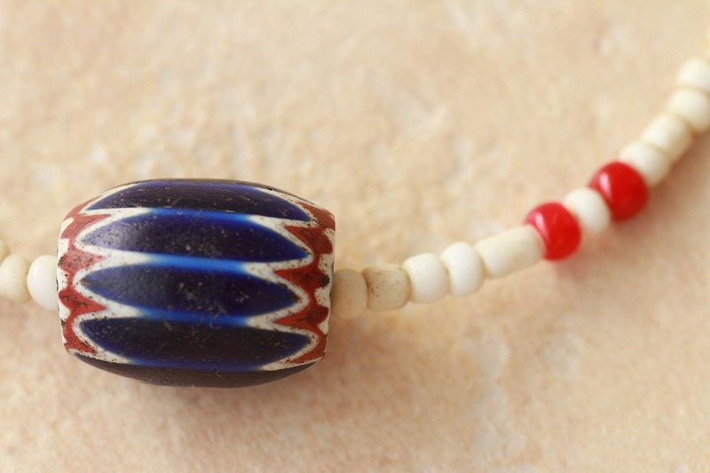

6層シェブロン中玉 ロングネックレス アンティークビーズ とんぼ玉
1900年代ヴェネチア
¥16,907税込
在庫を確認して注文するすべて一点ものです。行き違いですでに売り切れている場合があります。ご注文をいただいたあとに在庫を確認し、2営業日以内にお返事いたします。
在庫がある場合は、あわせて振込先と送料をご案内します。お支払いは銀行振込のみ、ご入金の確認後に発送いたします。この時点ではまだご注文は確定しませんので、ご安心ください。
ボタンを押すとメールが開きます。商品番号が入っていますので、お名前とご住所を書き添えて送信してください。
1800年代後期－1900年代初期、ヴェネチア製アフリカ向けのアンティークトレードビーズの6層 シェブロンです。
大きさは直径約１．７５ｃｍ、長さ約２．２５ｃｍで形のバランスも優れた一品です。
ネック部は、古色白のジャワ製シードビーズ（年代不問）を使用しております。
ポイントに赤いホワートハーツを素養しました。
| 商品番号 | N130075 |
|---|---|
| 製作年代 | 1900年代 |
| 産地・系統 | ヴェネチア |
| 全長 | 約740mm |
| 玉のサイズ | 約17×22mm |
| 重量 | 約30g |
一点ものです。同じものはありません。